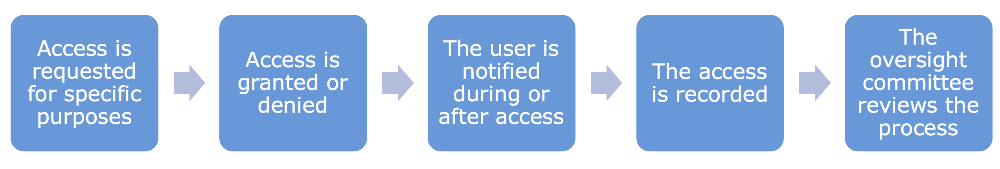
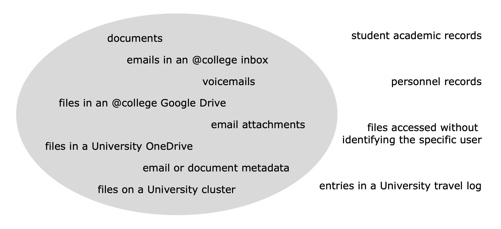
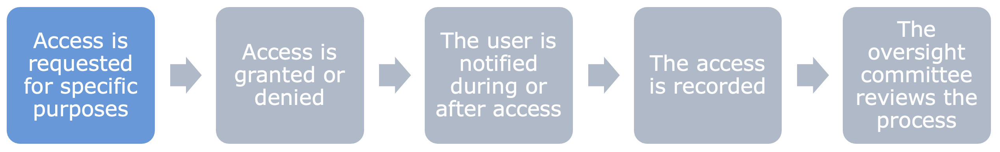

Harvard University’s Policy on Access to Electronic Information
Harvard University’s Policy on Access to Electronic Information
Brief Summary of the Policy:
This policy applies across all parts of Harvard University, including Harvard College
The University cannot routinely monitor your personal data, can only access it for specific purposes, and must limit its scope of access and who has access to user electronic information as much as possible
Access to the data of Harvard College students is authorized by the College Dean or the dean's designee
The process follows the general form below although there are exceptions in the case of litigation and safety related requests

Definitions:
University systems: “all services, networks, and devices owned, provided, or administered by any unit of the University” e.g. “email services, Internet access, file servers, voice message services, storage devices and services, laptop and desktop computers, phones and other mobile devices, and usage and access logs”
Users: “Harvard faculty, others holding academic appointments at Harvard, students, staff, and other employees”
User electronic information: “(i) Documents and communications...which are located in files and accounts associated with a particular user. (ii) Information generated by automated processes triggered by that user’s use of University systems, such as tracks of Internet use and logs of access to facilities.” “User electronic information does not include (a) records regularly maintained by the University in the ordinary course of business...or information provided by personnel in connection with regular University record-keeping or (b) information as described in (ii), above, when accessed by the University without identifying or seeking to identify any particular user
User electronic information includes everything in the gray oval and excludes everything outside of it.

Requests for Access

Example Reasons for Access
System Protection, Maintenance, and Management e.g. protecting university systems against malware and viruses
Business Continuity e.g. if an employee falls ill, one of their colleagues can access information on the sick employee’s drive in order to ensure that business can continue as usual
Safety Matters e.g. a bomb threat on campus
Legal Process and Litigation e.g. law enforcement investigation